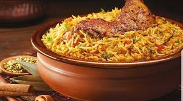
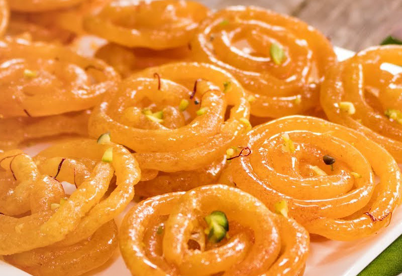

The word Biryani is derived from the Persian word Birian, which means fried before cooking’ and
Birinj, the Persian word for rice. Many historians believe that biryani originated from Persia
and was brought to India by the Mughals. Mughal soldiers seemed undernourished and in order to
provide a balanced diet to the soldiers, chefs were asked to prepare a dish with meat and rice.
Now Biryani is considered to be a delicacy across the world as royal cooks began to add this
delicious treat onto their recipe books. The popularity of lamb and chicken biriyani has
increased and many versions of these dishes have evolved. To prepare chicken biriyani you first
start off by marinating the chicken in yogurt, garlic paste, garam malasa, salt, chili paste,
and lemon juice. While the chicken marinates for an hour, you start cooking the basmati rice and
set it aside once its done. After the chicken is marinated, you cook it separately with fried
onions and once both items are cooked, you gently layer the chicken and rice and further cook
the items. Although biriyani is hugely popular across the world and eaten daily in some cultures,
the dish itself is complicated and takes a level of intricacy.
| Components | Ingredients | Recipe example (please follow one) |
|---|---|---|
| Rice | Basmati/Jasmine rice | Dassana Amit |
| Meat | Chicken/Lamb | Swasthi |
| Marinade | Yogurt, garlic paste, garam masala, salt, chili powder, tumeric, lemon juice | Hazel Grace |
| Spices | bay leaf, green cardamoms, cloves, cinnamon piece, caraway seeds, strand mance | Ruchi |

Crisp, orange and coiled, jalebi's unique shape has mesmerized us all at some point in life.
Several poets and writers have used jalebi for a variety of their poetic references and metaphors.
Jalebi is a popular Indian snack/sweet, that is deep fried and soaked in sugary syrup.
This dessert can be served warm or cold. They have a somewhat chewy texture with a crystallized sugary
exterior coating. This exquisite dessert is doled out in the hot oil, using a muslin cloth, fried
and carefully transferred in the sugar syrup. The process of making jalebi is as intricate and beautiful
as the final product. This dish is served best as a snack or after a meal as dessert.
I remember growing up being excited about having guests over because my mom would bring jalebis home
along with other snacks. You can have jalebis alone, or with a samosa, but best paired with a generous
dollop of creamy rabdi. Jalebis are also famous in middle east and Africa. In Iran. they are known as
zoolbia and Azerbaijan as zulbiya. Although the names might be different, the dish still brings joy
to the faces of everyone who eats them.